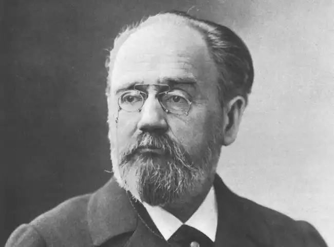
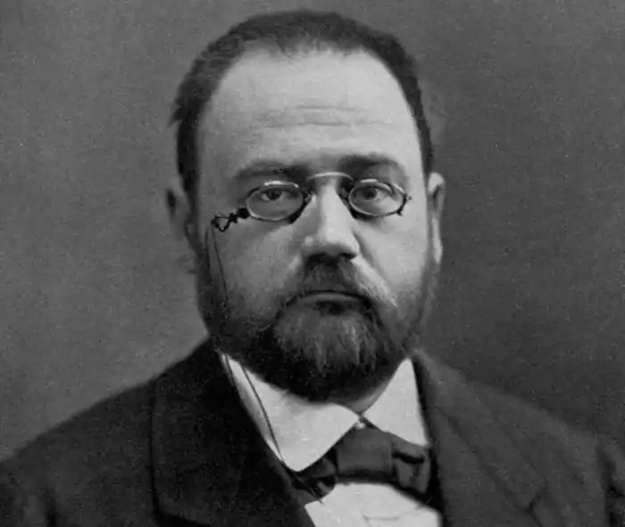

ЗОЛЯ, Еміль (Zola, Emile — 02.04.1840, Париж — 29.09.1902, там само) — французький письменник.Народився в сім'ї талановитого інженера-будівельника Франческо Золя. Рано втратив батька (1847). Дитячі та юнацькі роки провів у Ексі. З 1852 р. навчався у колежі. Після смерті батька через матеріальні нестатки сім'я 1858 р. переїхала у Париж, де Золя продовжив освіту в ліцеї. 1862 р. Золя почав працювати у бюро пакування одного із найбільших видавництв Ашетт. Праця у видавництві дала можливість Золя ознайомитися з літературним життям Парижа.
Замолоду Золя зачитувався романтиками, його кумирами були А. де Мюссе та В.Гюго. У 1864 р. Золя зібрав написані ним у різний час оповідання та новели романтичного характеру й опублікував їх під назвою "Казки для Нінон" ("Contes a Ninon"). У новелах цієї збірки романтична пишномовність поєднується з майстерністю реалістичної деталі. У романі "Сповідь Клода" ("La confession de Claude", 1865) ще досить відчутний романтичний елемент, проте помітна полеміка з романтизмом. Золя правдиво описує важке, безпросвітне життя юнака. До певної міри цей роман є автобіографічним твором. Роман "Марсельські таємниці"("Les mysteres de Marseille", 1867) продемонстрував майстерність Золя-фейлетоніста, його зацікавлення соціальними проблемами.
Уже на ранньому етапі творчості Золя виступав не лише як письменник-романіст, а й як публіцист і критик. Він співпрацював з газетами "Евенман", "Фігаро", у яких публікував свої статті й етюди. У цей період Золя в літературно-критичних та мистецтвознавчих книгах "Що я ненавиджу" ("Mes haines", 1866), "Мій салон" ("Моп salon", 1866), "Едуард Ма"е" ("Edouard Manet", 1867) розробив основні засади натуралістичної естетики. У цих працях Золя декларує принцип об'єктивності та правдивості мистецтва, вимагає від художнього твору документальної точності, а від митця — скрупульозного спостереження та вивчення дійсності. Золя визнає детермінуючу роль середовища і спадковості для особистості. У статті "Прудон і Курбе"(1864) Золя викладає формулу мистецтва: "Твір мистецтва — це куточок природи, побачений через темперамент митця". Згодом Золя неодноразово звертатиметься до проблеми співвідношення об'єктивного (природи) і суб'єктивного (темпераменту митця) чинників творчості. Для Золя немає суперечності між вірністю натурі та виявом творчої індивідуальності. Йому були близькими творчі пошуки художників-імпресіоністів, яких він підтримував і пропагував. На думку Золя, Е. Мане — художник, котрий навчився "дивитися природі в обличчя і бачити її такою, якою вона є". Підсумковим твором молодого Золя став роман "Тереза Ракен" ("Therese Raquin", 1867) — найяскравіший взірець "фізіологічного роману", роману-експерименту. Твір написаний під впливом "Жерміні Ласерте" братів Ґонкурів. Так само, як Гонкури у своєму романі хотіли застосувати "клінічний аналіз кохання", Золя у "Терезі Ракен", за його власним зізнанням, хотів дати "клінічний аналіз докорів сумління". У центрі роману — "любовний трикутник"; традиційність сюжетної схеми підкреслює нетрадиційність потрактування вибраної теми. Поведінка головної героїні мотивується її темпераментом: у її жилах тече гаряча африканська кров, адже вона з походження креолка. Проте, маючи пристрасну та чуттєву вдачу, Тереза змушена притлумлювати свою пристрасть, одружившись зі слабкодухим нелюбом Камілем. Зустріч із Лораном і вибух грубої чуттєвої пристрасті визначають долю Терези. Прагнучи побороти перешкоди на шляху своєї пристрасті, Тереза і Лоран вбивають Каміла. Але, потерпаючи від докорів сумління та страху, у фіналі роману вони вчиняють самогубство. Золя сам чітко усвідомив певну нетиповість своїх героїв. Тереза і Лоран — натури, наділені винятковими темпераментами. "Тереза і Лоран — два людські звірячі організми. Я намагався крок за кроком у цих людях-тваринах описати роботу пристрастей. Кохання моїх героїв — задоволення фізіологічної потреби. Душа тут цілковито відсутня, саме цього я й прагнув", — писав Золя у передмові до роману. Таким чином, письменник досягає чистоти експерименту, уникаючи психологічної мотивації поведінки героїв. Золя розумів, що зробив спробу "дослідження випадку занадто виняткового". У романі "Мадлен Фера" ("Madeleine Ferat", 1868) концепція особистості залишається без істотних змін. Але герої цього другого натуралістичного фізіологічного роману Золя наділені більш витонченою духовною організацією, ніж герої "Терези Ракен". Це ускладнює експеримент, але нічого не змінює в його результатах: біологічний фатум виявляється непереборним, і герої зазнають поразки. Стилістика обох ранніх натуралістичних романів містила в собі ту суперечність між фактографічною точністю, скрупульозним описом, з одного боку, і високою емоційністю, з іншого, яка стане прикметною рисою "Ругон-Маккарів", головного твору Золя, що зробив його всесвітньо відомим. Задум "Руґон-Маккарів. Природної та соціальної історії однієї родини в епоху Другої імперії" ("Les Rougon-Macquart, histoire naturelle et sociale d'une famille sous le Second Empire", 1871—1893) сформувався на кінець 1868 p. Вочевидь, створюючи свою грандіозну фреску із двадцяти романів, Золя орієнтувався на традиції "Людської комедії" О. де Бальзака. Золя сприймав його як "батька" сучасного мистецтва, предтечу натуралізму, тому що Бальзак, на думку Золя, "замінив уяву поета спостереженням ученого". Орієнтуючись на бальзаківську панорамність у зображенні дійсності, Золя не відмовляється від своєї натуралістичної доктрини. Першочерговим завданням свого циклу "Руґон-Маккари" Золя вважав дослідження на прикладі однієї родини проблем спадковості та середовища. Інше завдання — "дослідити всю Другу імперію, від державного перевороту до наших днів. Утілити в типах сучасне суспільство, злодіїв і героїв" — прямо вказує на бальзаківське трактування письменника як "секретаря суспільства". До циклу "Руґон-Маккари" увійшли романи: "Кар'єра Руґонів" (" La fortune des Rougon", 1871), "Здобич" ("La curee", 1871), "Черево Парижа" ("Le ventre de Paris", 1873), "Завоювання Плассана" ("La conquete de Plassans", 1874), "Провина абата Муре" ("La faute de Г abbe Mouret", 1875), "Його величність Ежен Ругон" ("Son exellence Eugene Rougon", 1876), "Пастка" ("L'assommoir", 1877), "Сторінка кохання" ("Une page d'amour", 1878), "Нана" ("Nana", 1880), "Накип" ("Pot-bouille", 1882), "Дамське щастя" ("Au bonheur des dames", 1883), "Радість життя" (1884), "Жерміналь" ("Germinal", 1885), "Творчість" ("L'o euvre", 1886), "Земля" ("La terre", 1887), "Мрія" ("Lt reve", 1888), "Людина-звір" ("La bete humaine", 1890), "Гроші" ("L'argent", 1891), "Розгром"("La debacle", 1892), "Доктор Паскаль" ("Le docteur Pascal", 1893). Роман "Кар'єра Руґонів" має підзаголовок "Походження". У циклі "Руґон-Маккари" цей роман стає своєрідним прологом, в якому йдеться про походження родини Руґон-Маккарів і, водночас, про виникнення режиму Другої імперії. Час дії в романі — грудень 1851 р. У центрі — події державного перевороту, внаслідок якого до влади прийшов Луї Бонапарт. Місце дії — невеличке провінційне містечко Плассан, яке стало для Золя ніби моделлю всього французького суспільства напередодні перевороту. Показавши, які державні сили й чому підтримували державний переворот, Золя подає серію сатирично змальованих характерів провінційних буржуа (П'єр, Фелісіте, Грану, Сікардо, Вюйє). Для Золя очевидно, що прихід буржуазії до влади заплямований кров'ю безневинних людей. Боягузтво і підлість П'єра Ругона та йому подібних дозволили утвердитися режимові Другої імперії, що її Золя назве "епохою безумства та ганьби" у Франції. У романах "Здобич", "Черево Парижа" показано шлях до влади двох пройдисвітів та авантюристів на кшталт Арістіда Саккара чи Ежена Ругона, змальоване те живильне середовище, яке стане опорою для нового режиму — дрібна торгова буржуазія, котра вхопила свою частку здобичі від милостей імперії, всі ці "гладкі", самовдоволені міщани (родина Кеню у "Череві Парижа"). Уже в цих перших романах проступає одна з характерних рис стилю Золя — поєднання деталізованого опису з образом-символом, у якому концентрується головний зміст картини. Такими, скажімо, є описи зимового саду в помешканні Саккара ("Здобич") і картина центрального ринку в "Череві Парижа". Але за блискучим фасадом Другої імперії Золя бачить нещастя і знедоленість нижчих прошарків суспільства, стрімке падіння моральності та страхітливе лицемірство можновладців. Ці тривожні процеси в суспільному житті Франції Золя аналізує в романах кінця 70-х — поч. 80-х pp. ("Пастка", "Нана", "Накип"). Роман "Пастка "був першим у творчості Золя розлогим полотном із народного життя. Роман зробив Золя скандально відомим. Літературні сноби протестували, багато читачів відмовилися від передплати, і все ж за рекордно короткий термін роман витримав 30 видань. Гостра реакція певної частини публіки пояснювалася тим, що в романі вперше з такою правдивістю було показано життя французьких низів. У романі йдеться про драму родини Купо, про її фізичну та моральну деградацію. "Від банальності інтриги мене може врятувати лише велич і правдивість зображених мною картин народного життя. Позаяк я беру дурнувату, вульгарну і брудну обстановку, я повинен надати малюнкові більшої рельєфності", — писав Золя про роман. Таким чином, письменник ставить перед собою складне естетичне завдання: продемонструвати придатність для справжнього мистецтва будь-якого матеріалу, розширити відповідно до принципів натуралістичної естетики сферу художнього. Праля Жервеза і покрівельник Купо, працелюбні та прості люди, намагаються облаштувати своє маленьке щастя, своє скромне родинне життя. Але з Купо трапився нещасний випадок на роботі, й це позбавило його можливості працювати. Купо залишається без роботи і поступово спивається, дедалі частіше навідується в шинок під назвою "Пастка". Своїм романом Золя стверджує, що злидар приречений на загибель, що умови життя і праці неминуче призводять його до деградації і вимирання. Водночас, Золя не забуває дати і біологічну мотивацію того, що відбувається в романі: крах Купо та Жервези пояснюється не лише соціальними, а й спадковими чинниками (Жервеза — нащадок Аделаїди Фук по лінії Маккарів, тобто спадної гілки родини; Купо теж страждає від спадкового алкоголізму). Золя особисто зазначав "філософський зв'язок", який існує між "Пасткою" і наступним його романом "Нана".